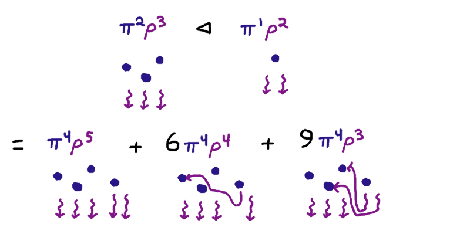

Some More Thoughts About Types with Internal References
Suppose we have a function $F : * \to * \to *$ that takes two type variables
and spits out a type. For the moment, let's pretend
to be physicists/combinatorialists
and assume that
$F$ is handed to us in the form of a power series
\[F(\pi, \rho) = \sum_{n,m} c_{n,m} \pi^n \rho^m \]
I'm going to give away a certain interpretation I intend for
such a power series: each
\[ c_{n,m} \pi^n \rho^m \]
is supposed to mean "there are $c_{n,m}$ ways of being a piece of data of type $F$ that has
$n$ many places for references to refer to, and $m$
many dangling references to some place elsewhere.
Let's call a thing like $F$ — by which I mean merely
a type operator with kind $* \to * \to *$ — a referential type.
I want to define a binary operation on referential types,
that takes $F$ and $G$ and outputs $F \lhd G$,
the referential type that is kind of like the product of $F$ and $G$,
except each of the dangling references in the $G$-data
are allowed (but not required)
to refer to places in the $F$-data.
Here's an example:

If we set $F(\pi, \rho) = \pi^2\rho^3$ and $G(\pi, \rho) = \pi^1\rho^2$,
then $(F \lhd G)(\pi, \rho) = \pi^4\rho^3(\rho + 3)^2$.
We have just as many places (3 + 1 = 4)
as the places from $F$ and $G$ combined, and we have at least 3 dangling
referenecs coming from $F$, and for each dangling reference of $G$ either
we leave it dangling ($\rho + \cdots$) or we pick one of $F$'s places
for it to connect to ($\cdots + 3$) and we must make this choice
for both of the dangling references of $G$ ($(\cdots)^2$).
In general, we say that if
\[F(\pi, \rho) = \sum_{n,m} c_{n,m} \pi^n \rho^m \]
\[G(\pi, \rho) = \sum_{n',m'} d_{n',m'} \pi^{n'} \rho^{m'} \]
then
\[(F \lhd G)(\pi, \rho) = \sum_{n,n',m,m'} c_{n,m} d_{n',m'} \pi^{n + n'} \rho^{m}(\rho + n)^{m'} \]
We could also define an operation that symmetrically allowed
dangling references in $F$ to refer to places in $G$; this would
be something like
\[(F \bowtie G)(\pi, \rho) = \sum_{n,n',m,m'} c_{n,m} d_{n',m'} \pi^{n + n'} (\rho + n')^{m}(\rho + n)^{m'} \]
But I'm not going to consider this for now.
Expressing Binary DAGs
Ther reason is that the asymmetric right-to-left reference definition
is I think what I need to express the referential type of
binary trees whose leaves are of type $\alpha$ with sharing of subnodes.
I just postulate that I have a type-recursion operator $\mu$
at kind $* \to * \to *$, and I can say
\[ \mathrm{rDAG}_\alpha : * \to * \to * = \mu (\beta : * \to * \to *) . (\Lambda \pi.\Lambda \rho . \rho + \pi * (\alpha + (\beta \lhd \beta))) \]
If I wish to extract the ordinary type of DAGs with leaves $\alpha$,
I just need to define
\[ \mathrm{DAG}_\alpha = \mathrm{rDAG}_\alpha(1, 0) \]
Here's a way of thinking about this definition: a DAG is either a
reference to some other node earlier in the tree ($\rho + \cdots$) or
else it is a node being described for the first time, which makes
it a referrable place $(\pi * \cdots)$ and that node can either be
a leaf $(\alpha + \cdots)$ or it can be a binary node; and references
used in the right child can point back at places found in the left child
$(\cdots + \beta \lhd \beta)$.
The raw type of DAGs plugs in $1$ for $\pi$ to express that at the
end of the day, there is no data stored at each referrable place,
and plugs in $0$ for $\rho$ to express that all references must ultimately
be resolved to somewhere else in the DAG, and not be external anymore.
Thinking Analytically about $\lhd$
I'd like to have some kind of analytic/generatingfunction understanding
of what $\lhd$ is doing.
Simplified Version
Let's warm up with the less-than-fully
general problem of taking
\[F(\pi) = \sum_{n} c_n \pi^n\]
\[G(\rho) = \sum_{m} d_m \rho^m \]
and trying to build the type
\[H(\pi) = \sum_{n,m} c_n d_m n^m \pi^n \]
$H$ expresses all the ways we can resolve all the references in
$G$ to some place in $F$; we have to make $m$ choices among $n$
places. It also records the fact that we still have the $n$ places remaining
from $F$.
I think to myself, hm, I could get some $n$s downstairs if I applied
the differential operator $\pi {\partial\over \partial\pi}$ to $F$ some number of times.
\[(\pi {\partial\over \partial\pi})^i F(\pi) = \sum_{n} c_n n^i \pi^n\]
but the number of times I need to apply this is dependent on $m$!
So maybe let me form the differential operator
\[
{1\over 1 - \pi D_\pi} = 1 + \pi{\partial \over \partial \pi}
+ \left(\pi{\partial \over \partial \pi}\right)^2
+ \left(\pi{\partial \over \partial \pi}\right)^3 + \cdots
\]
and observe that
\[{1\over 1 - \pi D_\pi} F(\pi) = \sum_{n,i} c_n n^i \pi^n \]
and
\[{1\over 1 - \pi D_\pi} F(\pi) G(\rho) = \sum_{n,m,i} c_n n^i \pi^n \rho^m\]
at this point I can try pulling auxiliary-variable tricks, by introducing $h$, and
saying
\[{1\over 1 - h\pi D_\pi} F(\pi) G(1/h) = \sum_{n,m,i} c_n n^i \pi^n \rho^m h^{i-m}\]
and pulling out the $h^0$ coefficient of the resulting powerseries gives
\[\left({1\over 1 - h\pi D_\pi} F(\pi) G(1/h)\right)\bigg|_{h^0} =
\sum_{n,m} c_n n^m \pi^n = H\]
Less Simplified Version
This $n^m$ at least gives us a way of building the final term of
the binomial expansion of $(\rho + n)^{m}$. How about the second-to-last
term? That would be
\[(\rho + n)^{m} = \rho^{m} + m \rho^{m-1} n + \cdots +
\left( m \atop k\right) \rho^{m-k} n^k + \cdots +
\textcolor{blue}{m \rho n^{m-1}} + n^{m}\]
To pull that $m$ out, we'll want to differentiate $G$ with respect to $\rho$. And
we'll want to adjust what we do with $h$ to get the $m-1$ in the exponent of $n$.
Actually, let's change the variable name on the outside to make things slightly
clearer: we say that our current goal is to express
\[H(\pi, \nu) = \sum_{n,m} c_n d_m (m \nu n^{m-1}) \pi^n\]
in terms of
\[F(\pi) = \sum_{n} c_n \pi^n\]
\[G(\rho) = \sum_{m} d_m \rho^m \]
We do this by observing
\[\left({1\over 1 - h\pi D_\pi} F\right) \left(\nu D_\rho G (1/h)\right) \]
\[=
\left( \sum_i h^i(\pi D_\pi)^i \sum_{n} c_n \pi^n \right) \left(\nu
D_\rho \sum_{m} d_m \rho^m \right)\bigg|_{\rho = 1/h}
\]
\[=
\left( \sum_{n,i} h^i c_n n^i \pi^n \right) \left(\nu \sum_{m} d_m m h^{1-m} \right)
\]
\[= \sum_{n,i,m} c_n d_m n^i \pi^n \nu m h^{i + 1-m} \]
So we just need to take the $0$-coefficient of $h$ to see that
\[\left({1\over 1 - h\pi D_\pi} F\right) \left(\nu D_\rho G(1/h)\right)
\bigg|_{h^0} = H(\pi, \nu)\]
More Coefficients
How about the third-to-last term of the binomial expansion?
\[(\nu + n)^{m} = \nu^{m} + m \nu^{m-1} n + \cdots +
\left( m \atop k\right) \nu^{m-k} n^k + \cdots +
\textcolor{blue}{m(m-1) \nu^2 n^{m-2} / 2} + m \nu n^{m-1} + n^{m}\]
Here I seem to be a bit stuck, because I don't know how to
accomplish that division by 2 type theoretically. I'm going to forge ahead anyway.
\[\left({1\over 1 - h\pi D_\pi} F\right) \left((\nu^2 / 2) D^2_\rho G(1/h)\right)
\bigg|_{h^0} \]
\[= \left( \sum_{n,i} c_n n^i h^i \pi^n\right) (\nu^2 m (m-1) / 2) \sum_{m} d_m h^{2-m}
\bigg|_{h^0} \]
\[= \sum_{n,m,i} c_n n^i \pi^n (\nu^2 m (m-1) / 2) d_m h^{i + 2-m} \bigg|_{h^0} \]
\[= \sum_{n,m} c_n d_m \pi^n (m (m-1) \nu^2 n^{m-2} / 2) \]
All the Binomial Coefficients
Ok, so I guess the pattern is somehow that I want the differential operator
\[e^{\nu D_\rho} = 1 + \nu D_\rho + {\nu^2 D^2_\rho\over 2} + {\nu^3 D^3_\rho\over 3!} + \cdots \]
in the sense that
\[\left({1\over 1 - h\pi D_\pi} F\right) e^{\nu D_\rho} G(1/h)\bigg|_{h^0} \]
\[=\sum_{n,i} c_n n^i h^i \pi^n \left(\sum_j{\nu^j D_\rho^j\over j!} \sum_m d_m \rho^m \right)_{\rho = 1/h}\bigg|_{h^0} \]
\[=\sum_{n,i} c_n n^i h^i \pi^n \left(\sum_j{\nu^j m! \over (m-j)!j!} \sum_m d_m \rho^{m-j} \right)_{\rho = 1/h}\bigg|_{h^0} \]
\[=\sum_{n,i} c_n n^i h^i \pi^n \left(\sum_j \nu^j \left( m \atop j\right) \sum_m d_m \rho^{m-j} \right)_{\rho = 1/h}\bigg|_{h^0} \]
\[=\sum_{n,m,i,j} c_nd_m n^i \pi^n \nu^j \left( m \atop j\right) h^{i + j-m} \bigg|_{h^0} \]
\[=\sum_{n,m,j} c_nd_m n^{m-j} \pi^n \nu^j \left( m \atop j\right) \]
\[=\sum_{n,m} c_nd_m \pi^n (\nu + n)^m \]
Oh,
but the
internet tells me that this operator accomplishes nothing more
than shifting the function it's applied to by $\nu$. So I should be able to calculate just as easily that
\[\left({1\over 1 - h\pi D_\pi} F\right) G(\nu + 1/h)\bigg|_{h^0} \]
\[=\sum_{n,i} c_n n^i h^i \pi^n \sum_m d_m (\nu + 1/h)^m \bigg|_{h^0} \]
\[=\sum_{n,m,i,j} c_nd_m n^i \pi^n \nu^j \left( m \atop j\right) h^{i + j-m} \bigg|_{h^0} \]
\[=\sum_{n,m,j} c_nd_m n^{m-j} \pi^n \nu^j \left( m \atop j\right) \]
\[=\sum_{n,m} c_nd_m \pi^n (\nu + n)^m \]
Nice!
Defining $\lhd$ analytically
Now that I don't have to differentiate with respect to $\rho$, I can abandon inventing a separate variable $\nu$ to keep track
of what's going on.
So let's say we have the general case of
\[F(\pi, \rho) = \sum_{n,m} c_{n,m} \pi^n \rho^m \]
\[G(\pi, \rho) = \sum_{n',m'} d_{n',m'} \pi^{n'} \rho^{m'} \]
then we claim
\[(F \lhd G)(\pi, \rho) = \sum_{n,n',m,m'} c_{n,m} d_{n',m'} \pi^{n + n'} \rho^{m}(\rho + n)^{m'} \]
can be given by
\[(F \lhd G)(\pi, \rho) =
\left({1\over 1 - h\pi D_\pi} F (\pi, \rho)\right) \left( G(\pi, \rho + h^{-1})\right)\bigg|_{h^0} \]
for we can compute
\[ \left({1\over 1 - h\pi D_\pi} F (\pi, \rho)\right) \left( G(\pi, \rho + h^{-1})\right)\bigg|_{h^0} \]
\[= \left( \sum_{n,m,i} c_{n,m} \pi^n \rho^m h^i n^i \right) \left( \sum_{n',m'} d_{n',m'} \pi^{n'} (\rho + h^{-1})^{m'}\right)\bigg|_{h^0} \]
\[ = \sum_{n,m,i,n',m',j} c_{n,m}\pi^n \rho^m h^i n^i d_{n',m'} \pi^{n'} \left( m' \atop j \right) \rho^j h^{j-m'}\bigg|_{h^0} \]
\[ = \sum_{n,m,n',m',j} c_{n,m}\pi^n \rho^m n^{m'-j} d_{n',m'} \pi^{n'} \left( m' \atop j \right) \rho^j \]
\[ = \sum_{n,m,n',m',j} c_{n,m}\pi^n \rho^m d_{n',m'} \pi^{n'} (\rho + n)^{m'} \]
as required.